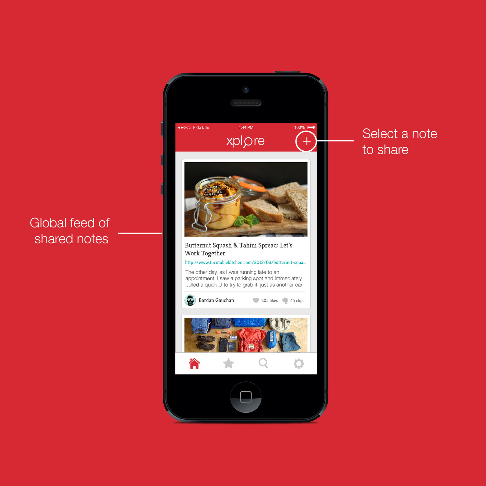
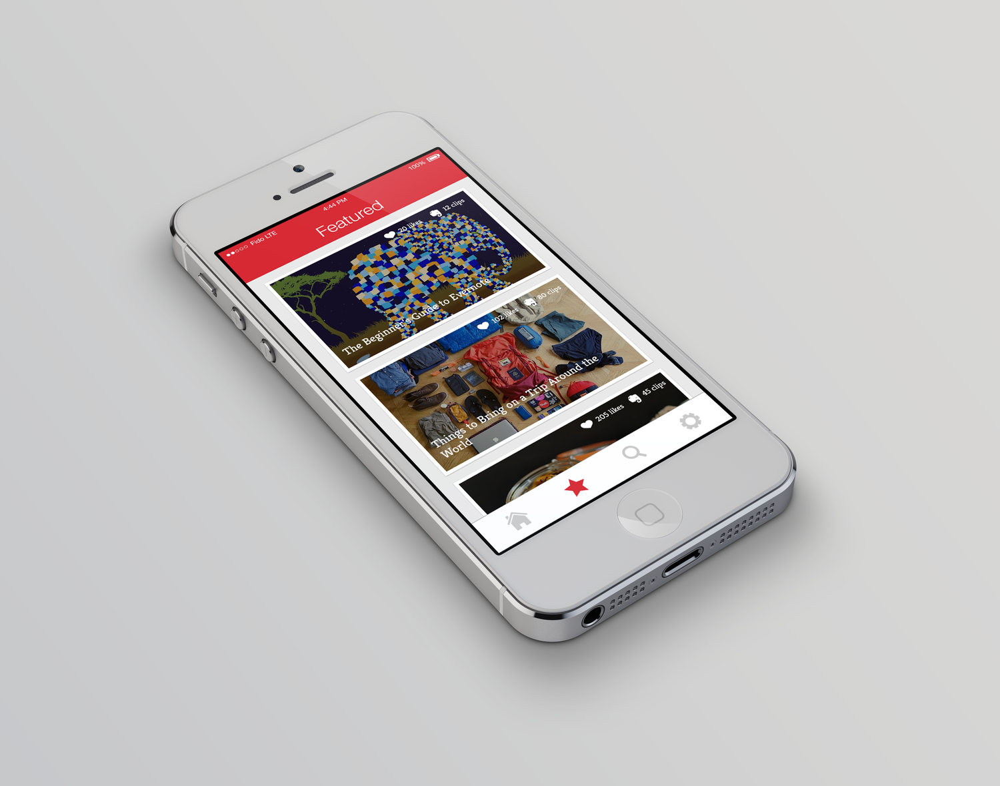
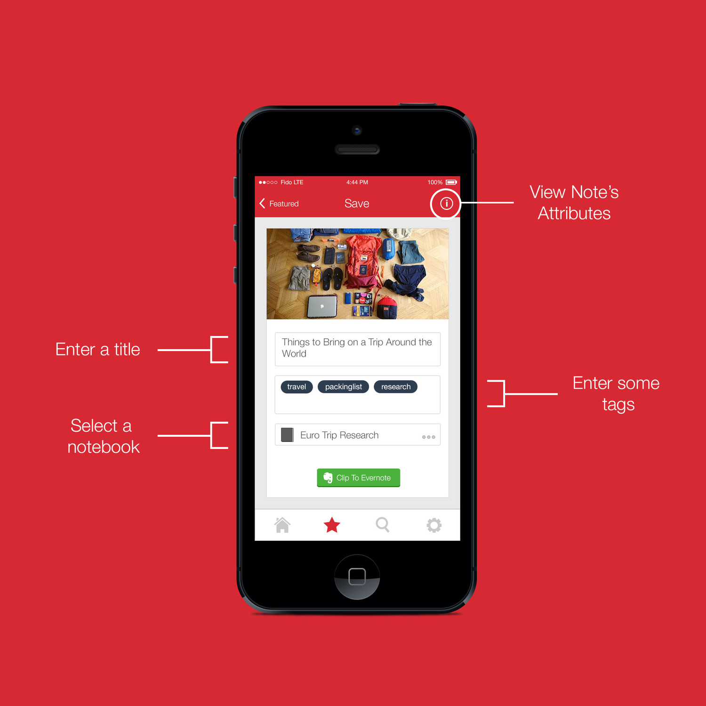
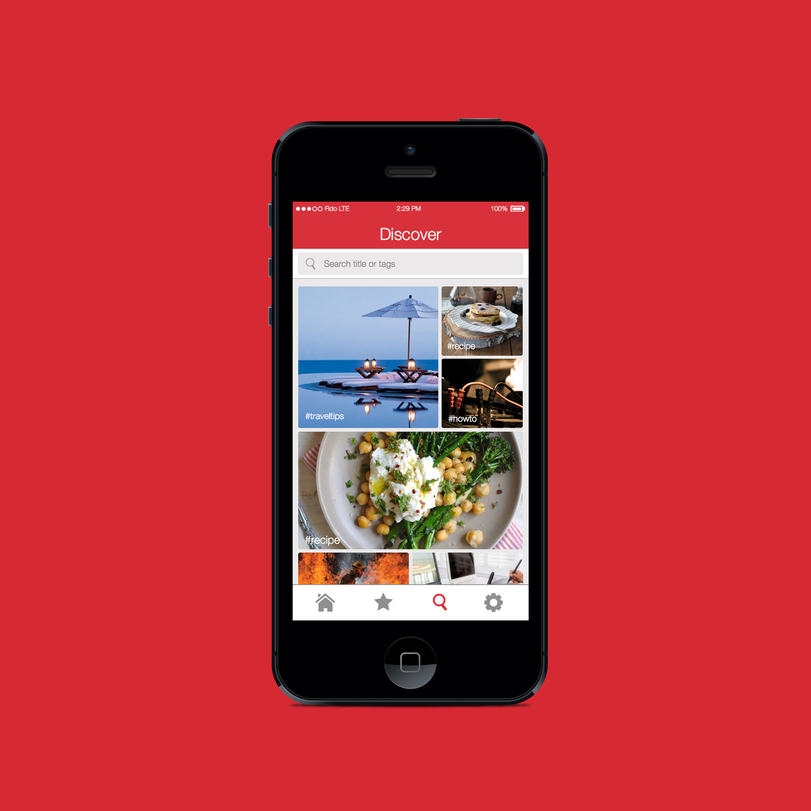

The idea behind Xplore was to build a social layer on top of Evernote. To create a platform for Evernote users to share and discover great content. In simple terms, this app lets a user share his notes from Evernote or find things other people have shared and save them back to Evernote.
Why would they want to do that? Because I believe everyone who uses Evernote has something saved in their account that could be useful to other users. For example, I have tutorials for iOS development and designing illustrations, recipes, my favorite articles, guides for travel destinations, how-to perform CPR, etc in my Evernote account. There could be others who might find the same content useful and since it's my account, I only save stuff that I find useful to me. The content I share would, in a way, filtered by me so it's not like I'm sharing anything and everything I find on the internet. Therefore, the feed of content being shared should be more useful since the Evernote users are acting like a filtering mechanism.
Evernote was designed to be private and personal, so making itself a social network would defeat the point. But the users would benefit a lot if there was a medium through which they could share notes with each other and discover things that other people have shared. Currently, Evernote lets you share notes with anyone but discovering and saving it back to your Evernote is very difficult if not impossible. You need to know the private link to the note that the user shared - which is what we want because if you're sharing to just one person, it's probably private and shouldn't be easy to find. But if you wanted to share it for everyone else to see, then that's another thing.
On Xplore a user can upload recipes, guides, tutorials, how-to, articles, etc. from their Evernote account and they can save anything that they come across on Xplore back to Evernote. You can browse around the featured notes section to find the best of the notes shared by everyone or you can use the search feature to discover more content.
I've made the app open source so that other new iOS developers could download the code and play around with it. I've learned a lot by downloading other people's open source projects and examining how they did certain stuff so I hope others can do the same from mine. The Github link is here.
For better view of the app interface, head over to the dribbble project page.
{kind=link}
{kind=link}
{kind=link}
{kind=link}
{kind=link}
{kind=link}